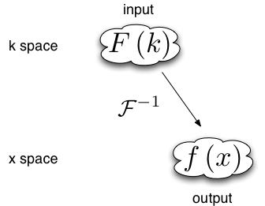
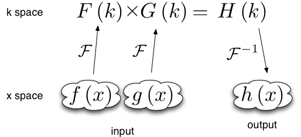
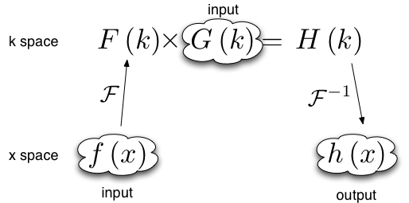

Advanced Topics¶
This section has further details on some important topics.
Importing data (importing data into XMDS2, and data formats used in the export)
Convolutions and Fourier transforms (extra information on the Fourier transforms used in XMDS2, how this applies to convolutions)
Dimension aliases (dimensions which are declared to be identical, useful for correlation functions)
Importing data¶
There are many cases where it is advantageous to import previously acquired data into XMDS2. For example, the differential equation you wish to solve may depend on a complicated functional form, which is more easily obtained via an analytical package such as Mathematica or Maple. Furthermore, importing data from another source can be quicker than needlessly performing calculations in XMDS2. In this tutorial, we shall consider an example of importing into XMDS2 a function generated in Mathematica, version 6.0. Note, however, that in order to do this it is required that hdf5 is installed (see http://www.hdfgroup.org/HDF5/).
Suppose we want to import the following function into XMDS2:
The first step is to create an hdf5 file, from XMDS2, which specifies the dimensions of the grid for the x dimension. Create and save a new XMDS2 file. For the purposes of this tutorial we shall call it “grid_specifier.xmds” with name “grid_specifier”. Within this file, enter the following “dummy” vector - which we shall call “gen_dummy” - which depends on the x dimension:
<vector type="real" name="gen_dummy" dimensions="x">
<components>dummy</components>
<initialisation>
<![CDATA[
dummy = x;
]]>
</initialisation>
</vector>
What “dummy” is is not actually important. It is only necessary that it is a function of \(x\). However, it is important that the domain and lattice for the \(x\) dimension are identical to those in the XMDS2 you plan to import the function into. We output the following xsil file (in hdf5 format) by placing a breakpoint in the sequence block as follows:
<sequence>
<breakpoint filename="grid.xsil" format="hdf5">
<dependencies>
gen_dummy
</dependencies>
</breakpoint>
In terminal, compile the file “grid_specifier.xmds” in XMDS2 and run the C code as usual. This creates two files - “grid.xsil” and “grid.h5”. The file “grid.h5” contains the list of points which make up the grids for the x dimensions. This data can now be used to ensure that the function \(f(x)\) which we will import into XMDS2 is compatible with the the specified grid in your primary XMDS2 file.
In order to read the “grid.h5” data into Mathematica version 6.0, type the following command into terminal:.. code-block:
xsil2graphics2 -e grid.xsil
This creates the Mathematica notebook “grid.nb”. Open this notebook in Mathematica and evaluate the first set of cells. This has loaded the grid information into Mathematica. For example, suppose you have specified that the \(x\) dimension has a lattice of 128 points and a domain of (-32, 32). Then calling “x1” in Mathematica should return the following list:
{-32., -31.5, -31., -30.5, -30., -29.5, -29., -28.5, -28., -27.5,
-27., -26.5, -26., -25.5, -25., -24.5, -24., -23.5, -23., -22.5,
-22., -21.5, -21., -20.5, -20., -19.5, -19., -18.5, -18., -17.5,
-17., -16.5, -16., -15.5, -15., -14.5, -14., -13.5, -13., -12.5,
-12., -11.5, -11., -10.5, -10., -9.5, -9., -8.5, -8., -7.5, -7.,
-6.5, -6., -5.5, -5., -4.5, -4., -3.5, -3., -2.5, -2., -1.5, -1.,
-0.5, 0., 0.5, 1., 1.5, 2., 2.5, 3., 3.5, 4., 4.5, 5., 5.5, 6., 6.5,
7., 7.5, 8., 8.5, 9., 9.5, 10., 10.5, 11., 11.5, 12., 12.5, 13.,
13.5, 14., 14.5, 15., 15.5, 16., 16.5, 17., 17.5, 18., 18.5, 19.,
19.5, 20., 20.5, 21., 21.5, 22., 22.5, 23., 23.5, 24., 24.5, 25.,
25.5, 26., 26.5, 27., 27.5, 28., 28.5, 29., 29.5, 30., 30.5, 31.,
31.5}
This is, of course, the list of points which define our grid.
We are now in a position to define the function \(f(x)\) in Mathematica. Type the following command into a cell in the Mathematica notebook “grid.nb”:
f[x_]:= x^2
At this stage this is an abstract mathematical function as defined in Mathematica. What we need is a list of values for \(f(x)\) corresponding to the specified grid points. We will call this list “func”. This achieved by simply acting the function on the list of grid points “x1”:
func := f[x1]
For the example grid mentioned above, calling “func” gives the following list:
{1024., 992.25, 961., 930.25, 900., 870.25, 841., 812.25, 784.,
756.25, 729., 702.25, 676., 650.25, 625., 600.25, 576., 552.25, 529.,
506.25, 484., 462.25, 441., 420.25, 400., 380.25, 361., 342.25, 324.,
306.25, 289., 272.25, 256., 240.25, 225., 210.25, 196., 182.25, 169.,
156.25, 144., 132.25, 121., 110.25, 100., 90.25, 81., 72.25, 64.,
56.25, 49., 42.25, 36., 30.25, 25., 20.25, 16., 12.25, 9., 6.25, 4.,
2.25, 1., 0.25, 0., 0.25, 1., 2.25, 4., 6.25, 9., 12.25, 16., 20.25,
25., 30.25, 36., 42.25, 49., 56.25, 64., 72.25, 81., 90.25, 100.,
110.25, 121., 132.25, 144., 156.25, 169., 182.25, 196., 210.25, 225.,
240.25, 256., 272.25, 289., 306.25, 324., 342.25, 361., 380.25, 400.,
420.25, 441., 462.25, 484., 506.25, 529., 552.25, 576., 600.25, 625.,
650.25, 676., 702.25, 729., 756.25, 784., 812.25, 841., 870.25, 900.,
930.25, 961., 992.25}
The next step is to export the list “func” as an h5 file that XMDS2 can read. This is done by typing the following command into a Mathematica cell:
SetDirectory[NotebookDirectory[]];
Export["func.h5", {func, x1}, {"Datasets", { "function_x", "x"}}]
In the directory containing the notebook “grid.nb” you should now see the file “func.h5”. This file essentially contains the list {func, x1}. However, the hdf5 format stores func and x1 as separate entities called “Datasets”. For importation into XMDS2 it is necessary that these datasets are named. This is precisely what the segment {"Datasets", { "function_x", "x"}} in the above Mathematica command does. The dataset corresponding to the grid x1 needs to be given the name of the dimension that will be used in XMDS2 - in our case this is “x”. It does not matter what the name of the dataset corresponding to the list “func” is; in our case it is “function_x”.
The final step is to import the file “func.h5” into your primary XMDS2 file. This data will be stored as a vector called “gen_function_x”, in component “function_x”.
<vector type="real" name="gen_function_x" dimensions="x">
<components>function_x</components>
<initialisation kind="hdf5">
<filename> function_x.h5 </filename>
</initialisation>
</vector>
You’re now done. Anytime you want to use \(f(x)\) you can simply refer to “function_x” in the vector “gen_function_x”.
The situation is slightly more complicated if the function you wish to import depends on more than one dimension. For example, consider
As for the single dimensional case, we need to export an hdf5 file from XMDS2 which specifies the dimensions of the grid. As in the one dimensional case, this is done by creating a dummy vector which depends on all the relevant dimensions:
<vector type="real" name="gen_dummy" dimensions="x y">
<components>dummy</components>
<initialisation>
<![CDATA[
dummy = x;
]]>
</initialisation>
</vector>
and exporting it as shown above.
After importing the grid data into Mathematica, define the multi-dimensional function which you wish to import into XMDS2:
g[x_,y_]:= x*Sin[y]
We need to create a 2x2 array of data which depends upon the imported lists x1 and y1. This can be done by using the Table function:
func := Table[g[x, p], {x, x1}, {p, p1}]
This function can be exported as an h5 file,
SetDirectory[NotebookDirectory[]];
Export["func.h5", {func, x1, y1}, {"Datasets", { "function_x", "x", "y"}}]
and imported into XMDS2 as outlined above.
Convolutions and Fourier transforms¶
When evaluating a numerical Fourier transform, XMDS2 doesn’t behave as expected. While many simulations have ranges in their spatial coordinate (here assumed to be x) that range from some negative value \(x_\text{min}\) to some positive value \(x_\text{max}\), the Fourier transform used in XMDS2 treats all spatial coordinates as starting at zero. The result of this is that a phase factor of the form \(e^{-i x_\text{min} k}\) is applied to the Fourier space functions after all forward (from real space to Fourier space) Fourier transforms, and its conjugate is applied to the Fourier space functions before all backward (from Fourier space to real space) Fourier transforms.
The standard Fourier transform is
The XMDS2 Fourier transform is
When the number of forward Fourier transforms and backwards Fourier transforms are unequal a phase factor is required. Some examples of using Fourier transforms in XMDS2 are shown below.
Example 1¶

When data is input in Fourier space and output in real space there is one backwards Fourier transform is required. Therefore the Fourier space data must be multiplied by a phase factor before the backwards Fourier transform is applied.
Example 2¶

Functions of the form \(h(x) = \int f(x') g(x-x') dx'\) can be evaluated using the convolution theorem:
This requires two forward Fourier transforms to get the two functions f and g into Fourier space, and one backwards Fourier transform to get the resulting product back into real space. Thus in Fourier space the product needs to be multiplied by a phase factor \(e^{-i x_\text{min} k}\)
Example 3¶

Sometimes when the convolution theorem is used one of the forward Fourier transforms is calculated analytically and input in Fourier space. In this case only one forward numerical Fourier transform and one backward numerical Fourier transform is used. The number of forward and backward transforms are equal, so no phase factor is required.
‘Loose’ geometry_matching_mode¶
Dimension aliases¶
Dimension aliases specify that two or more dimensions have exactly the same lattice, domain and transform. This can be useful in situations where the problem enforces this, for example when computing correlation functions or representing square matrices.
Dimension aliases are not just a short-hand for defining an additional dimension, they also permit dimensions to be accessed non-locally, which is essential when computing spatial correlation functions.
Here is how to compute a spatial correlation function \(g^{(1)}(x, x') = \psi^*(x) \psi(x')\) of the quantity psi:
<simulation xmds-version="2">
<!-- name, features block -->
<geometry>
<propagation_dimension> t </propagation_dimension>
<transverse_dimensions>
<dimension name="x" lattice="1024" domain="(-1.0, 1.0)" aliases="xp" />
</transverse_dimensions>
</geometry>
<vector name="wavefunction" type="complex" >
<components> psi </components>
<initialisation>
<!-- initialisation code -->
</initialisation>
</vector>
<computed_vector name="correlation" dimensions="x xp" type="complex" >
<components> g1 </components>
<evaluation>
<dependencies> wavefunction </dependencies>
<![CDATA[
g1 = conj(psi(x => x)) * psi(x => xp);
]]>
</evaluation>
</computed_vector>
<!-- integration and sampling code -->
</simulation>
In this simulation note that the vector wavefunction defaults to only having the dimension “x” even though “xp” is also a dimension (implicitly declared through the aliases attribute). vector’s without an explicit dimensions attribute will only have the dimensions that are explicitly listed in the transverse_dimensions block, i.e. this will not include aliases.
See the example groundstate_gaussian.xmds for a complete example.